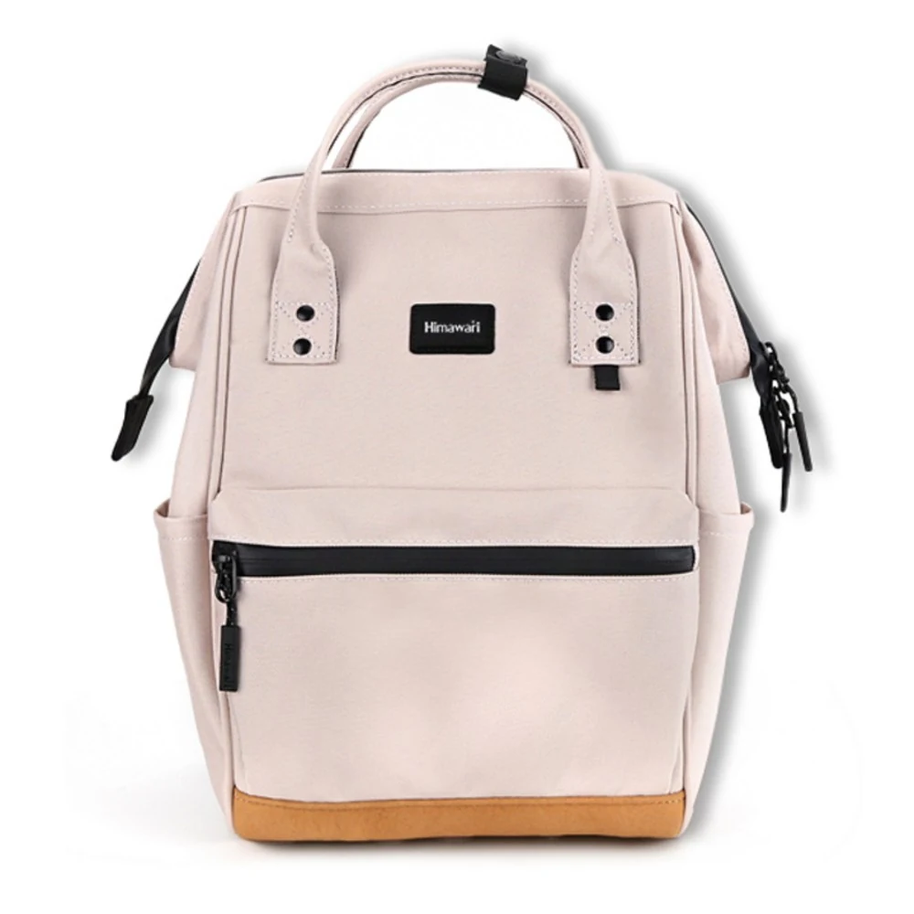
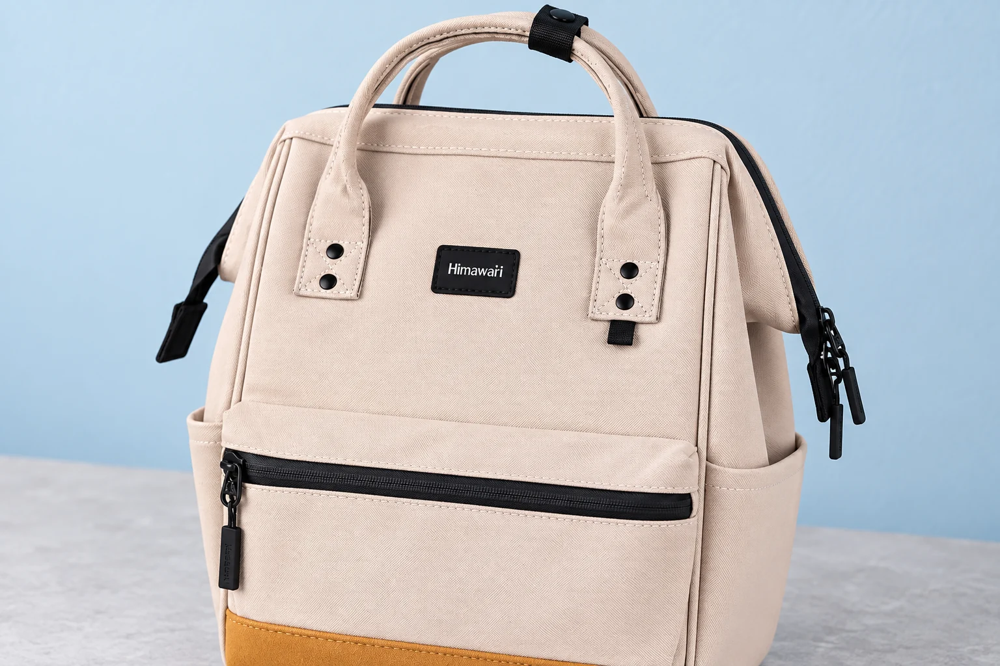

백팩 손잡이 아래의 둥근 부품, 누르면 열리는 단추일까
No.124S 베이지의 정면 사진을 보면 손잡이 부착부 아래에 검정색 원형 부품이 두 개씩 보입니다. 두 줄로 놓인 네 점이 단추처럼 보여도 실제로 여닫는 부품인지는 사진 한 장으로 확정할 수 없습니다. 가방에서 둥근 금속 부품을 만났을 때에는 모양의 이름보다 그 부품이 무엇과 연결되어 있는지를 먼저 구별해야 합니다.
가방을 열고 닫는 여밈과 가방의 원단이나 부착부를 묶어 두는 고정 부품은 역할이 다를 수 있습니다. 여기서는 일반적인 리벳과 스냅 구조를 비교해 그 차이를 설명합니다. No.124S에 달린 검정 네 점의 종류, 재료, 고정 강도나 분해 가능 여부는 확인하지 않았습니다. 보이는 외형을 부품 사양으로 바꾸어 적지 않는다는 전제에서 출발합니다.
천에 붙는 연결과 열고 닫는 연결을 나눕니다
YKK의 스냅·단추 구조 안내에서는 리벳과 그에 맞는 부품이 원단을 사이에 두고 고정되는 구조를 설명합니다. 같은 안내에서 스냅은 소켓과 스터드가 서로 맞물리는 부분을 따로 구분합니다. 바깥으로 둥근 면이 보일 수 있다는 공통점이 있어도 원단에 부품을 부착하는 일과 두 여밈을 맞물려 잠그는 일은 같은 동작이 아닙니다.
가방에 적용해 생각하면 손잡이가 몸판에 붙는 자리와 덮개가 앞주머니를 닫는 자리는 다른 연결일 수 있습니다. 어떤 부품이 손으로 반복해서 여닫도록 설계되었는지 확인하지 않고 둥근 면만 눌러 보면 고정 부품을 여밈으로 착각할 수 있습니다. 반대로 실제 여밈이 있는 부분도 모양이 납작하다는 이유로 장식이라고 단정할 수는 없습니다.
No.124S 사진에서 지금 확인되는 것은 네 점이 손잡이 부착부에 놓여 있다는 위치입니다. 검정 밴드는 손잡이 위쪽에 있고 앞주머니의 지퍼는 그 아래쪽을 가로지릅니다. 이 위치 구분은 각각을 같은 잠금장치로 읽지 않도록 도와줍니다. 다만 네 점이 어떤 방식으로 고정됐는지까지 보여주는 단면이나 열린 부품 사진은 아닙니다.

스냅에도 원단에 남는 부품이 있습니다
스냅을 열면 부품이 천에서 떨어져야 한다고 생각할 수 있지만 여밈을 여는 일과 부품을 원단에서 떼는 일은 다릅니다. YKK는 소켓과 스터드가 맞물려 잠기는 부분을 설명하면서 각 부분을 원단에 부착하는 구성도 나누어 보여 줍니다. 어느 연결을 분리하는지 구분하지 않으면 스냅을 여는 방법과 부품을 제거하는 방법을 같은 것으로 혼동하기 쉽습니다.
부자재 제조사 Prym의 스냅 안내도 스프링 부분과 스터드로 이루어진 여밈을 설명합니다. 이 자료는 일반 구조를 이해하기 위한 참고이며 No.124S에 같은 부자재가 쓰였다는 뜻은 아닙니다. 가방에서 실제로 맞물리는 두 부분이 어디에 있는지 확인하는 문제와, 내가 보고 있는 둥근 겉면이 어떤 부품인지 확인하는 문제를 구분할 수 있습니다.
겉면의 색과 지름만으로는 연결 구조를 정할 수 없습니다. 검정색이거나 은색이라는 사실이 고정식과 개폐식을 가르는 기준은 아닙니다. 단추처럼 생겼다는 관찰은 남길 수 있지만 곧바로 풀어도 된다는 사용 안내로 바꾸지는 않습니다. 사진에서 맞물리는 상대 부품이 보이지 않는다면 보이지 않는다는 상태를 그대로 남겨 둡니다.
리벳 설명을 손잡이의 하중 표기로 읽지 않습니다
YKK의 리벳 제품 설명은 바깥에서 보이는 부분과 원단 안쪽에서 관통해 고정하는 부분의 관계를 설명합니다. 원단을 고정하는 구조를 이해하는 데 참고할 수 있지만 같은 모양의 부품이 달린 모든 가방에 같은 성능이 있다는 뜻은 아닙니다. 이 자료를 No.124S 손잡이의 허용 하중으로 옮길 수는 없습니다.
가방 손잡이에는 원단과 봉제, 부착 위치 등 여러 부분이 함께 있습니다. 사진 속 원형 부품이 네 개라는 수를 세었다고 손잡이가 어느 정도 무게를 견디는지 계산할 근거가 생기지는 않습니다. 또한 겉면이 반듯하게 보인다는 사실만으로 안쪽 고정 상태를 확인했다고 할 수 없습니다. 부품 구조를 배운 뒤에도 제품별로 확인하지 못한 정보는 남습니다.

낯선 부품에는 사용법을 묻는 질문을 붙입니다
부품을 따로 구입하려는 상황에서는 겉면 지름이 비슷하다는 이유로 맞는 짝이라고 정하지 않습니다. 스냅이 맞물리는 부분의 형태와 원단에 부착하는 부분의 구성이 같은지 확인할 자료가 필요하기 때문입니다. 리벳처럼 보이는 겉면 사진만으로 교체 부품을 주문하는 일도 같은 한계가 있습니다. 가방의 모델과 부품 위치를 알려 주고 판매처가 안내할 수 있는 범위를 확인하는 쪽으로 질문을 남깁니다.
No.124S의 검정 네 점이 궁금하다면 위치가 보이는 전체 사진과 가까운 사진을 함께 두고 이 부분이 사용자가 여닫는 장치인지 물을 수 있습니다. 부품명을 확정하지 못했다면 손잡이 아래의 둥근 검정 부품이라고 적어도 됩니다. 리벳인지 스냅인지라는 추측을 문의의 전제로 삼는 것보다, 어떤 동작을 허용하는지 확인하는 질문이 먼저입니다.
확인되지 않은 고정 부품을 손톱이나 도구로 벌려 구조를 알아보려 하지는 않습니다. 일반적인 설명 그림을 보고 내 가방도 같은 방식일 것이라고 가정하는 일도 피합니다. 이 글은 부품 교체나 해체 방법을 안내하지 않습니다. 물건을 넣는 입구를 찾는 과정에서 손잡이 부착부까지 열어 보아야 한다는 뜻도 아닙니다.
둥근 부품이라는 겉모양 아래에는 서로 다른 연결 방식이 있을 수 있습니다. 가방의 어느 부분을 붙들고 있는지, 실제로 맞물리는 두 면이 확인되는지, 사용자가 반복해서 여닫도록 안내된 곳인지를 나누어 보세요. No.124S의 네 점을 당장 한 가지 이름으로 부르기보다 고정과 개폐를 구별할 질문을 남기면 모양만 보고 가방을 다루는 실수를 줄일 수 있습니다.